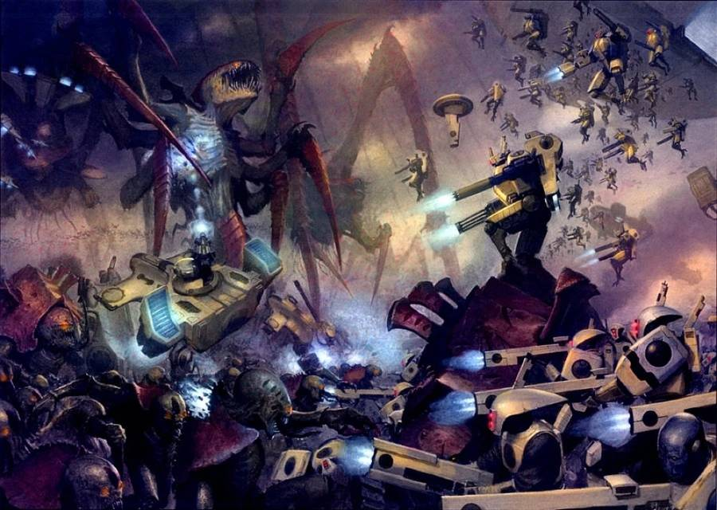

T'au Empire
| T'au Empire The Greater Good | |
|---|---|
 Symbol of the T'au Empire Artwork © Games Workshop | |
| Classification | Xenos; a young, expansionist stellar empire |
| Homeworld | T'au, in the eastern fringe of the Ultima Segmentum |
| Founded | Several thousand Terran years ago (Imperial estimates differ) |
| Government | The Ethereal High Council; rule by the Ethereal caste under the Greater Good |
| Castes | Ethereal (Aun), Fire (Shas), Earth (Fio), Water (Por), Air (Kor) |
| Auxiliaries | Kroot, Vespid, Gue'vesa (human defectors), Nicassar, Demiurg and others |
| Philosophy | Greater Good (T'au'va) |
| Leaders in the Era Indomitus | |
| Aun'Shi; Commander Shadowsun; the Ethereal High Council; Commander Farsight (Farsight Enclaves) | |
| Principal wars against the Imperium | |
| Damocles Gulf Crusade (742–745.M41); the Third Sphere Expansion (from 997.M41); Taros Campaign (998.M41); the Second Agrellan Campaign (999.M41) | |
The T'au Empire is a young and rapidly expanding xenos realm in the eastern fringe of the galaxy. It is the only xenos power that the Imperium has seen grow within recorded history, and the only one that offers the worlds it takes the choice of joining it. Its inhabitants, the T'au, are a small, intelligent, technically gifted people who have, in a short time, created a stellar domain, a strong economy and a military of advanced battle suits and fighting craft. They are bound by a philosophy, the Greater Good, which asks every individual and every species to put the good of the whole before itself. The Imperium holds this philosophy to be a deception and a heresy against the Emperor.[1][2]
The Imperium and the T'au have been at war since 742.M41. The relationship has been uneven. Most of the Imperium's attention has been given to Chaos, the Orks and the Tyranids, and the T'au have taken advantage of every distraction. The Imperium's forces in the east have fought a series of campaigns against them. They have not won decisively, and the empire's borders have moved gradually into Imperial space. In the Era Indomitus the empire has added the worlds of the Imperium's eastern fringe, and some Imperial worlds have joined it willingly.[3]
Imperial scholars find the T'au a difficult enemy. They are not the Imperium's equals in numbers, nor in the ferocity of their soldiers, but they are quick learners and skilled diplomats. They use xenos auxiliaries, including Kroot mercenaries and Vespid, and human defectors known as the Gue'vesa. Their armies depend on firepower and manoeuvre, and refuse close combat if it can be avoided. A war with the T'au is a war of the long range, and it is for this reason that many Imperial Guard commanders have found it unsettling.[4]
Origins and rise
[edit]
The T'au
[edit]The T'au are native to the planet T'au in the eastern fringe. They are a short and slight people with grey or blue skin and hoofed feet. Imperial scholars estimate that they reached spaceflight within recent history, a few thousand years before the Imperium's first contact, and that their rapid advance was assisted by outside intervention. The T'au record that, in the early period of their history, their species nearly destroyed itself in a series of wars between the castes. They were rescued by the coming of the Ethereals, a caste whose origins are unknown and to whom every T'au will defer. The Ethereals united the species, established the caste system and set the people on the path of the Greater Good. The Imperium suspects that the Ethereals are manipulating the T'au by means of pheromones, and that their authority is not wholly natural. No evidence has been brought to prove it.[1]
The caste system
[edit]T'au society is divided into five castes, each with its own role. The Ethereals are rulers and priests. The Fire Caste is the warrior caste, who fight the empire's wars. The Earth Caste are its engineers and artisans, who build the battle suits and starships. The Water Caste are its diplomats and merchants, and it is they who make the first contact with a new people. The Air Caste are the pilots and the ship crews who link the colonies. The castes cooperate, and the empire is intended to function as a single body. Imperial scholars have observed that the T'au Empire has none of the internal rebellions or heresies that have afflicted the Imperium, and have concluded that this is a weakness only in appearance.[1][5]
The Spheres of Expansion
[edit]The empire's growth is divided into periods known as Spheres of Expansion. In the First Sphere, over a number of centuries, the T'au settled eight worlds, among them Dal'yth, Sa'cea and Vior'la, and incorporated the Kroot and Vespid homeworlds into the empire. The Second Sphere, which began in 018.M39 on the orders of the Ethereal Supreme Aun'Wei, saw many more colonies founded and brought the T'au into contact with the Imperium. It ended when Imperial forces retreated from T'au space after the Damocles Gulf Crusade. The Third Sphere, from 997.M41, was an offensive of unprecedented scale, led by Commander Shadowsun. Imperial records refer also to a Fourth and a Fifth Sphere, but the details are known only in part, and the Ordo Xenos cannot say how far each has gone.[1][5]
Wars against the Imperium
[edit]The Damocles Gulf Crusade
[edit]The first war between the Imperium and the T'au was the Damocles Gulf Crusade, fought in the Lithesh Sector between 742 and 745.M41. Before the war, Water Caste emissaries had established trade with Imperial frontier worlds near the Damocles Gulf. The Administratum, alarmed at the xenos contamination, prepared a response, and after almost a century of delay a crusade fleet was sent into the T'au empire. It destroyed a number of outlying settlements and drove deep into T'au space, but when it came to Dal'yth Prime it met a stronger defence than it had expected. The numbers and technology of the T'au and the ferocity of their Kroot allies made it impossible to take the sept world. After solar months of fighting, the commanders agreed to a T'au request for peace talks, and the Imperial fleet withdrew unmolested in late 745.M41, partly because Hive Fleet Behemoth was approaching from the east.[6][5]
The war was a stalemate, but the T'au saw it as a victory. They had held a larger enemy and had learned that the Imperium was beatable, and the Ethereals had learned the value of defending a perimeter. The Imperium regarded it as a successful lesson in the dangers of the xenos. The wars of this period also made the name of the Fire Caste officer whose later disobedience gave rise to the Farsight Enclaves.[6][1]
Farsight and the Enclaves
[edit]Commander Farsight, known to the T'au as Shas'O Vior'la Shovah Kais Mont'yr, was one of the greatest military leaders in the history of the T'au Empire. He won victories over the Orks and others, and in the course of his career he discovered, on the dead world of Arthas Moloch, a place of mystery that he believed held a teaching for the T'au. He left the empire against the orders of the Ethereals and founded the Farsight Enclaves beyond the Damocles Gulf. The Enclaves still hold to the Greater Good, but they reject the guidance of the Ethereals and use older equipment as well as some newer prototypes. The T'au consider them to be rebels, while the Imperium views them as a hostile power on its eastern flank that is nonetheless no friend of the Empire.[1][4]
Tyranids, Necrons and the Space Wolves
[edit]From 899 to 903.M41 the empire faced Hive Fleet Gorgon, a splinter of Behemoth, and its colonies at Sha'draig, Ho'sarn and Ka'mais were devastated. The T'au and the Imperium's Astra Militarum fought the swarm together on its last stage. In 936.M41 a T'au expeditionary force on the Imperial world of Malbede came into conflict with the Ultramarines, and their fighting woke the Necrons sleeping beneath the planet. Both forces were obliged to fight them, and the episode is often cited by Imperial scholars as an example of cooperation, although few Imperial commanders discuss it. In 966.M41, the T'au fought the Space Wolves at Kvarium Alpha, an ocean world, where the Space Wolves landed in drop pods in the sea and the battle was fought under the waves.[1][5]
The Third Sphere Expansion
[edit]The greatest war between the T'au and the Imperium began in 997.M41, shortly after the Great War of Confederation, a decade-long campaign in which the T'au fought and beat a huge Ork invasion and which gave the empire a taste for joint operations. The Ethereal Supreme Aun'Va launched the Third Sphere Expansion on the Imperium's eastern border under Commander Shadowsun. The T'au won a series of victories, among them the Prefectia Campaign and the Battle of Mu'gulath Bay, at which the Imperial hive world of Agrellan, which controlled the approach to the Dovar System, was taken from the Imperium and became the T'au sept of Mu'gulath Bay. It is considered the high point of the expansion.[7][5]

In 998.M41 the Imperium's 4621st Imperial Guard Army was sent to retake the desert mining world of Taros, which the T'au had gained through a peaceful annexation. The world's Planetary Defence Force had sided with the empire, and the T'au were joined by Kroot and human Gue'vesa. The Taros Campaign was a failure for the Imperium, with heavy casualties and little result, and it was followed in 999.M41 by the Second Agrellan Campaign, in which Imperial forces tried to retake the world they had lost. The campaign failed. The Imperium's resistance was nevertheless stiffer, and the Zeist Campaign of about the same period, in which a Space Marine force counterattacked, seems to have stopped the expansion's momentum. The Ethereal Supreme Aun'Va was assassinated at about this time, and Imperial accounts of the killing do not agree.[7][5]
The Era Indomitus
[edit]The T'au have gained greatly from the Imperium's distractions. The Black Crusade, the Great Rift and the long Tyranid wars of the east have drawn off the Imperium's best forces, and the empire has added to its territory. The Ordo Xenos reports that the T'au Empire now has around one and a third times the volume it had before 997.M41, and that this is only what is known. A number of Imperial worlds have seceded from the Imperium and pledged themselves to the Greater Good, and the Imperium treats such worlds as heretics. Their human inhabitants are called Gue'vesa by the T'au and they are used as auxiliaries.[3][7]
The empire is, in the Era Indomitus, under greater strain than it has been before. The loss of Aun'Va deprived it of its supreme leader and the Ethereals have rearranged their authority. Tyranid fleets threaten its colonies, and the Great Rift has made a part of its space unreachable. In the Imperium's wars the Third Sphere's momentum has been checked in several places by Space Marines of the Ultramarines, Imperial Fists, Raven Guard and others, and Imperial counterattacks are reported to have retaken a number of lost worlds. In other places the Imperial forces have been unable to move at all. The empire continues to grow, and the Imperium to resist it.[3][4]
Military and technology
[edit]The T'au army, which the T'au call the Fire Caste, is a technological force. Its soldiers, the Fire Warriors, are armed with pulse rifles and wear lightweight armour. They are supported by battle-suits, the Crisis, Stealth and Broadside suits, which are crewed by veteran Fire Caste warriors and combine the mobility of infantry with the firepower of a tank. T'au tanks, such as the Hammerhead and the Devilfish, are held aloft by grav-technology, and the Air Caste's fighters and gunships dominate the skies of many battlefields. The T'au fleets are smaller than the Imperial Navy but are well-armed and manoeuvrable.[1]
The T'au are aware of their deficiencies in close combat and make use of their allies. The Kroot are a species of warriors who eat their foes and adopt their traits, and they serve the T'au as mercenary skirmishers. The Vespid are insectoid flyers from a high-gravity world. The Nicassar are psychic xenos who serve as the empire's psychic defence. The Demiurg, as the T'au term the Kin of the Leagues of Votann, are reported to sail vessels in T'au Protection Fleets. The T'au themselves hold that the diversity of their auxiliaries is proof of the Greater Good.[1][5]
Imperial attitudes
[edit]To the Imperial Cult the T'au are a heresy, for they deny the divinity of the Emperor and offer an alternative creed. To the Inquisition they are more dangerous than the usual xenos, because their offer to the human worlds is both attractive and credible: a life of peace and prosperity. Inquisitorial orders have been issued to purge any world that shows an inclination to the T'au. In practice, the Imperium's governors have often found that their own worlds, which have been left without support and without protection from the Imperium, are likely to accept the Greater Good with relief. This is the T'au Empire's greatest strength, and the Imperium's greatest cause for concern.[4][3]
Imperial commanders who have fought the T'au generally agree that the empire is beatable, but only by forces that can close with the enemy. The best method, known to every Guard colonel on the eastern front, is to attack fast and close, and it has often worked. The T'au have learned to take this into account.[5]
Timeline
[edit]| Date | Event |
|---|---|
| 789.M35 | The Explorator ship ''Land's Vision'' discovers the T'au, the first recorded contact with the Imperium. |
| 502.M37 | The Great Expansion of the T'au Empire begins. |
| 533.M37 | The T'au found their first offworld colony on Lu'val. |
| 893.M37 | The Poctroon become the first alien race to join the T'au Empire. |
| 606–792.M38 | The Campaign of Cleansing, the first long war of the T'au Empire against the Orks. |
| 844.M38 | The T'au and the Kroot form an alliance. |
| 956.M38 | The Great Expansion of the T'au Empire ends. |
| 018.M39 | The Second Sphere Expansion of the T'au Empire begins. |
| 876.M39 | The first clash between humans and the T'au, at Ke'lshan. |
| 600.M40 | Vior'la defeats an Ork invasion of the T'au Empire. |
| 742–745.M41 | The Damocles Gulf Crusade fights the T'au Empire. |
| Early M42 | The T'au Empire continues to expand, and its Ethereals rule its sphere under the Greater Good. |
See also
[edit]
References
[edit]- ^ a b c d e f g h i Codex: Leagues of Votann (9th Edition), pp. 6, 31. Games Workshop. Thorpe, Gavin. Last Chancers (Novel Series). Black Library.
- ^ Codex: T'au Empire (8th Edition), pp. 6-41. Games Workshop. Warhammer 40,000: Rulebook (8th Edition), pp. 132-135. Games Workshop.
- ^ a b c d Codex: Tau Empire (7th Edition), pp. 15-16. Games Workshop. Codex: Tau Empire (6th Edition), pp. 8-12, 22-24. Games Workshop.
- ^ a b c d Codex: Space Marines (5th Edition), pg. 48. Games Workshop. Codex: Tyranids (5th Edition), pp. 18-21. Games Workshop.
- ^ a b c d e f g h Planetstrike (5th Edition), pg. 57. Games Workshop. Farsight Enclaves - A Codex: Tau Empire Supplement (6th Edition). Games Workshop.
- ^ a b Warhammer 40,000: Rulebook (5th Edition), pg. 129. Games Workshop. Codex: Tau (4th Edition), pp. 9, 32, 34, 40, 44-47. Games Workshop.
- ^ a b c Apocalypse (5th Edition). Games Workshop. Warhammer 40,000: Rulebook (4th Edition), pg. 128. Games Workshop.